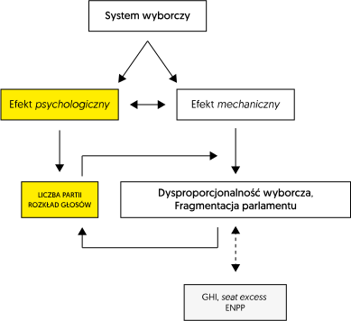
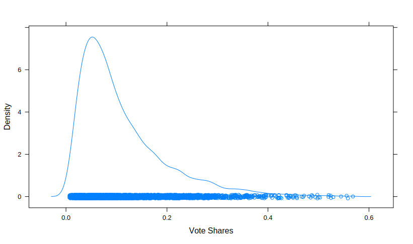
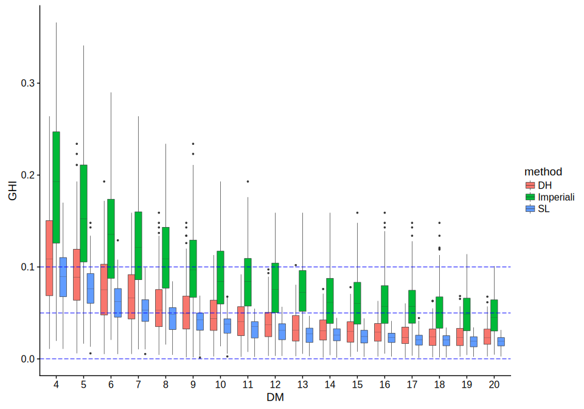

Zastosowanie symulacji komputerowych do badania efektów procedur wyborczych
Michał Pierzgalski
Symulacja komputerowa w studiach wyborczych
Balancing Disproportionality and Parliament Fragmentation:
A Simulation Study of the Mechanical Effects of District Magnitude on Electoral Outcomes
Obserwacja, eksperyment i symulacja
- Badania obserwacyjne (w tym sondaże opinii);
- Badania eksperymentalne;
- Badania symulacyjne.
Predyktory dysproporcjonalności

Electoral “sweet-spot” - małe okręgi (4-8 mandatów) są najlepsze
… ponieważ optymalizują dysproporcjonalność wyborów i poziom fragmentacji parlamentu (Carey & Hix 2011).
- Carey, J. M., & Hix, S. (2011). The Electoral Sweet Spot: Low-Magnitude Proportional Electoral Systems. American Journal of Political Science.
Wnioski z repliakcji badania Careya i Hixa (2011)
Analizując dane z prawdziwych elekcji, Carey i Hix popełniają błąd generalizacji; badacze nie kontrolują istotnych zmiennych moderujących.
…
Wnioski z repliakcji badania Careya i Hixa (2011)
…
W szczególności, stosując symulację komputerową można pokazać, że:
- tzw. electoral sweet-spot nie istnieje;
- Carey i Hix niedoszacowują kosztu stosowania małych okręgów wyborczych (4-8 mandatów), ponieważ nie kontrolują efektu głosowania strategicznego, który jest silny w małych okręgach i m.in. wpływa na liczbę rywalizujących partii w okręgu.
…
Wnioski z repliakcji badania Careya i Hixa (2011)
…
- Małe okręgi w rzeczywistości generują większy poziom dysproporcjonalności niż wynika to z analizy opartej na danych empirycznych (np. niektóre partie wycofują się)
Symulacja komputerowa
Symulacja komputerowa jest metodą wnioskowania o zachowaniu obiektów lub procesów rzeczywistych na podstawie obserwacji wyników działania programu komputerowego (symulatora), który naśladuje (symuluje) to zachowanie.
Symulacja komputerowa w badaniach wyborczych - izolacja efektu mechanicznego
Wykorzystując symulację komputerową można odseparować ‘mechaniczne’ efekty systemu wyborczego od efektów ‘psychologicznych’.
…
Symulacja komputerowa w badaniach wyborczych - izolacja efektu mechanicznego (2)
…
Badanie ‘czysto’ mechanicznego wpływu:
- formuły wyborczej,
- wielkości okręgu wyborczego,
na poziom dysproporcjonalności wyborczej.
Efekt psychologiczny
Efekt psychologiczny odzwierciedlają:
- ustalona liczba \(l\) rywalizujących w okręgu partii politycznych,
- Typ funkcji rozkładu prawdopodobieństwa, która wykorzystywana jest do losowania próby zawierającej głosy oddane na \(l\) partii politycznych w \(n\) elekcjach.
Metody dedukcyjne (matematyczne)
Metody dedukcyjne są najdoskonalsze, ale:
- dotychczasowe badania m.in. F. Pukelsheima dotyczyły przede wszystkim efektu mechanicznego formuły wyborczej,
- wymagają upraszczających założeń,
- są skomplikowane, gdy chcemy uwzględnić wszystkie istotne zmienne.
Badania w oparciu o dane z prawdziwych elekcji - podstawowe trudności
- Problem operacjonalizacji dysproporcjonalności wyborczej (GHI, seat bias, nadwyżka zwycięzcy itp.);
- Problem dostępności danych;
- Endogeniczność (endogeneity) - predyktory korelują z tzw. składnikiem losowym (error).
Endogeniczność
- Badając realne wyniki wyborów bardzo trudno jest odseparować efekt mechaniczny i psychologiczny; antycypowany efekt mechaniczny oddziałuje na czynniki psychologiczne.
- Podstawowe zmienne objaśniające dysproporcjonalność, czyli wielkość okręgu i formuła wyborcza korelują z liczbą konkurujących partii i rozkładem głosów.
Efekty Mechaniczne i psychologiczne

Dziękuję
Symulacja komputerowa w badaniach wyborczych - zalety (1)
- pozwala na przeprowadzenie złożonej analizy mechanicznych efektów systemów reprezentacji proporcjonalnej (uwzględnienie różnorodnych kombinacji formuły wyborczej, wielkości okręgów, klauzuli zaporowej oraz liczby konkurujących w okręgu partii);
…
Symulacja komputerowa w badaniach wyborczych - zalety (2)
…
- umożliwia odseparowanie efektów mechanicznych od efektów psychologicznych systemu;
- pozwala badając efekt jednej zmiennej utrzymać pozostałe zmienne na stałym poziomie (ceteris paribus);
- daje możliwość łatwej replikacji lub reprodukcji badania.
Symulacja komputerowa w badaniach wyborczych - zalety (3)
Symulacja komputerowa pozwala na precyzyjne prognozowanie:
- odchyleń od proporcjonalności,
- liczby partii parlamentarnych,
- nadwyżki zwycięzcy itp.,
dla różnorodnych konfiguracji parametrów systemu wyborczego. W tym tych konfiguracji, które empirycznie nie były stosowane.
Pytania szczegółowe (1)
- Czy istnieje optymalna kombinacja wielkości okręgu wyborczego oraz formuły wyborczej, która zapewnia równowagę między dysproporcjonalnością wyborczą i poziomem fragmentacji parlamentarnego systemu partyjnego (electoral sweet-spot)? Czy małe okręgi (4-8) są najlepsze? (Carey & Hix, 2011)
Pytania szczegółowe (2)
Jak na proporcję głosów najmniejszej partii uzyskującej mandaty wpływają różne konfiguracje formuły wyborczej, wielkości okręgów i klauzuli zaporowej?
Jak wpływają różne konfiguracje parametrów systemów reprezentacji proporcjonalnej na wysokość tzw. nadwyżki partii zwycięskiej (seat excess dla partii zwycięskiej)?
Symulator
Projekt aplikacji
Aplikacja komputerowa zaprojektowana z użyciem języka programowania R:
- pakiet disprr - wersja alpha;
- wersja online (aplikacja w technologii Shiny): https://polisci.shinyapps.io/disproportionality_of_apportionment_methods/
Symulacja dotyczy systemów reprezentacji proporcjonalnej.
Podstawowe cechy symulacji
Proces symulacji przebiega na dwóch podstawowych etapach:
I etap - stochastyczny
Symulator generuje (n) wektory głosów ważnych, oddanych w okręgach (\(TS\) mandatów do zdobycia) na (l) partie polityczne rywalizujące o głosy (poziom okręgu wyborczego).
Głosy oddane na partie losowane są np. z uciętego rozkładu log-normalnego:
\[v_i \sim lnN(\mu, \sigma, min = a, max = b)\]
Distributional assumption
Założenie dotyczące teoretycznego rozkładu prawdopodobieństwa opiera się na obserwacjach empirycznych rozkładów głosów w okręgach.
Typ rozkładu i parametry funkcji rozkładu prawdopodobieństwa można zmieniać.
Distributional assumption - pdf

Distributional assumption - rozkład empiryczny

II etap - deterministyczny
Symulator wykonuje operację podziału dostępnych (poziom okręgów) mandatów między l partii politycznych, z użyciem wybranych formuł wyborczych.
Przykładowe ustawienia symulacji
Zbiór danych z symulatora zawiera:
- wektory głosów dla \(l = \{3, 6, 9, 12\}\) partii, wylosowane z rozkładu log-normalnego,
- [dla] \(n = 500\) elekcji (zakłada się istnienie 1 okręgu narodowego),
- [w] okręgach o wielkości od 2 do 20 mandatów.
Dla wskazanych ustawień zbiór danych zawiera \(4 \times 500 \times 19\) = 38 000 elekcji.
Dziękuję
Analiza danych z symulacji
Modele: Dysproporcjonalność ~ Wielkość okręgu
- Model wykładniczy:
\[GHI(DM_i) = Ce^{\alpha \times DM_i} + \epsilon_i\]
- Model log-liniowy:
\[ ln(GHI_i) = \beta_0 + \beta_1 \times DM_i + \beta_2 \times method_i + \beta_3 \times NP_i + \\ + \beta_4 \times DM_i \times method_i + \beta_5 \times DM_i \times NP_i + \epsilon_i \]
Wizualizacja: Dysproporcjonalność ~ DM | 3

Wizualizacja: Dysproporcjonalność ~ DM | 9

Pytania
Pytania (1)
- Jakie są krańcowe efekty (marginal effects):
- metod alokacji mandatów {np. D’Hondt} i
- wielkości okręgów wyborczych,
względem wyborczej dysproporcjonalności?
Pytania (2)
- Jak zmienia się poziom wyborczej dysproporcjonalności mierzony GHI, gdy:
- zmieniamy metodę alokacji z Hamiltona na metodę (np.) D’Hondta,
- zwiększamy/zmniejszamy wielkość okręgu o jednostkę (\(\Delta DM = 1\))?
- Który z parametrów (formuła wyborcza, wielkość okręgu) wpływa silniej na poziom odchylenia od proporcjonalności mierzony wskaźnikiem GHI?
Wyniki
Wybrane wyniki
Uzyskane wartości liczbowe zostały wyznaczone na podstawie modeli regresyjnych, których parametry oszacowano z użyciem danych z symulacji Monte Carlo.
Konfiguracje parametrów systemu generujące dysproporcjonalność w przedziale [0.05, 0.1]
| Liczba partii | DH | SL | HA Imperiali |
|---|---|---|---|
| 3 | [[5.64], [9.45]] | [[4.51], [7.80]] | [[9.93], [16.06]] |
| 6 | [[8.69], [13.31]] | [[6.61], [10.20]] | [[14.79], [22.40]] |
| 9 | [[10.47], [15.76]] | [[7.82], [11.73]] | [[17.70], [26.36]] |
| 12 | [[11.76], [17.499]] | [[8.79], [13.02]] | [[19.22], [28.34]] |
Efekty krańcowe (1)

Efekty krańcowe (2)
Efekty krańcowe zmiany wielkość okręgów (\(\Delta DM = 1\)) względem dysproporcjonalności (wartości wyznaczone na podstawie nieliniowego modelu wykładniczego).
| - | Danish | DH | H | Imperiali | MSL | SL |
|---|---|---|---|---|---|---|
| 3 partie | -0.202 | -0.180 | -0.211 | -0.112 | -0.229 | -0.209 |
| 6 partii | -0.173 | -0.150 | -0.193 | -0.091 | -0.191 | -0.192 |
| 9 partii | -0.156 | -0.131 | -0.176 | -0.080 | -0.164 | -0.176 |
| 12 partii | -0.150 | -0.121 | -0.164 | -0.076 | -0.148 | -0.164 |
Efekty krańcowe (3a)

Efekty krańcowe (3b)

Efekty krańcowe (4a)
Dla \(\Delta DM = 3\) lub \(-3\)

Efekty krańcowe (4b)
Dla \(\Delta DM = 3\) lub \(-3\)

Podstawowe wnioski (1)
- Na przykład, dla metody d’Hondta i 6-partyjnego systemu, jeśli wielkość okręgu zmniejszy się o trzy mandaty, oczekiwana agregatowa dysproporcjonalność (GHI) - ceteris paribus - wzrośnie o ok. \(38\%\).
Podstawowe wnioski (2)
- Zamiana metody Hamiltona na formułę d’Hondta powoduje, przeciętnie, w przybliżeniu \(36\%\) wzrost dysproporcjonalności (GHI), w przedziale \(2-20\) mandatów na okręg.
Podstawowe wnioski (3)
- Ogólnie, badanie wskazuje, że zmiana formuły wyborczej (np. z Hamiltona na d’Hondta) ma mniejszy wpływ na poziom dysproporcjonalności wyborczej, w porównaniu do wpływu zmiany wielkości okręgu wyborczego (co najmniej o 3 mandaty).